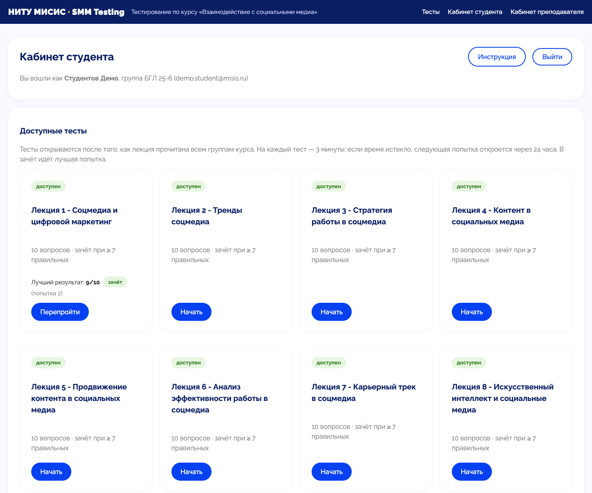
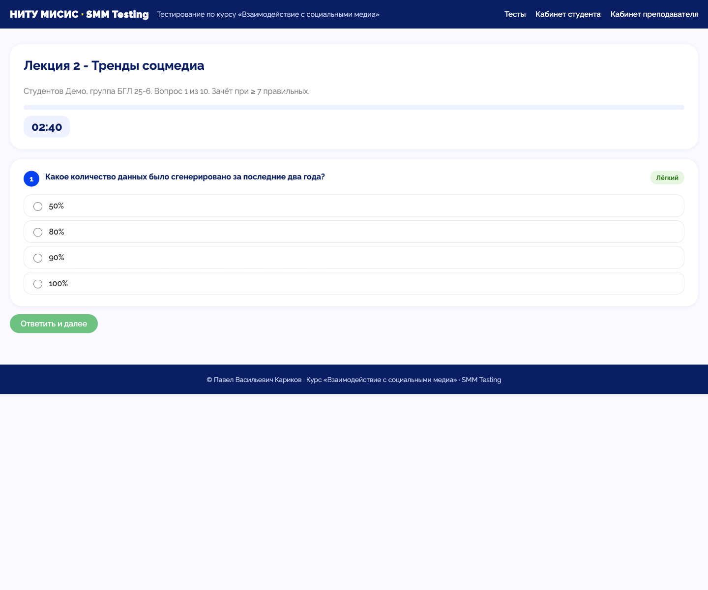
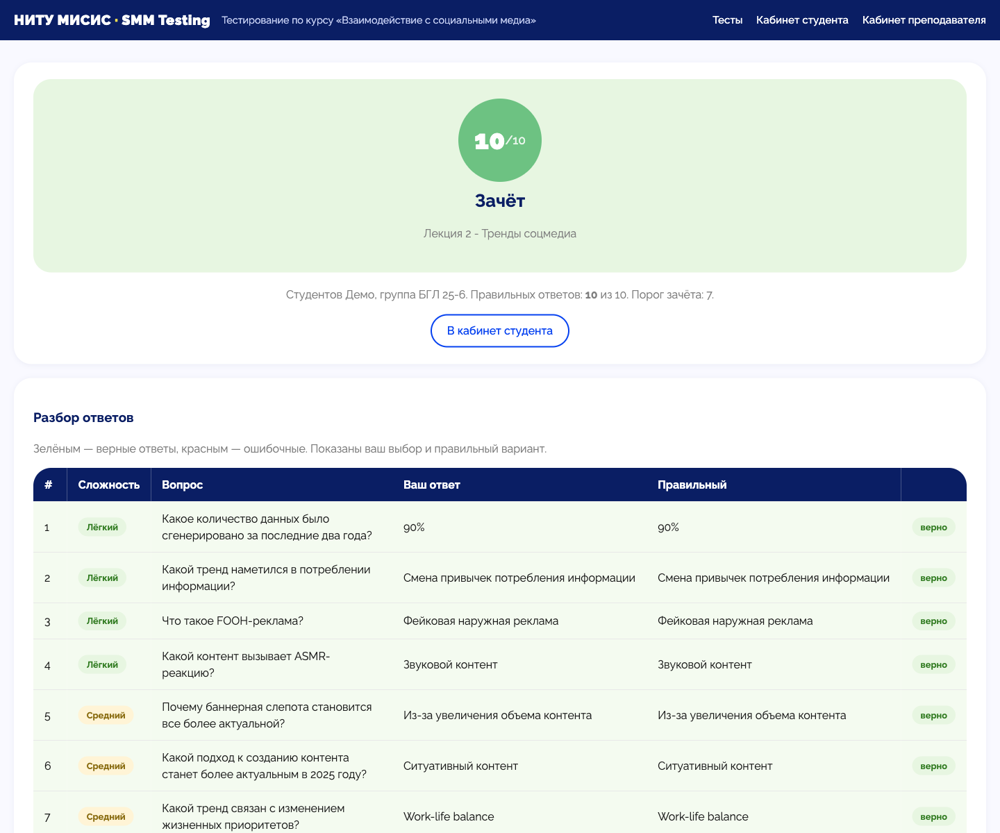
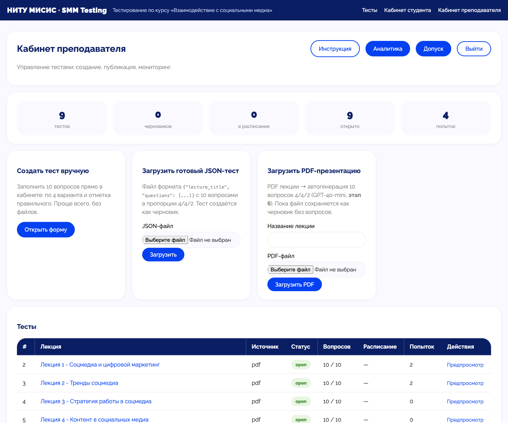
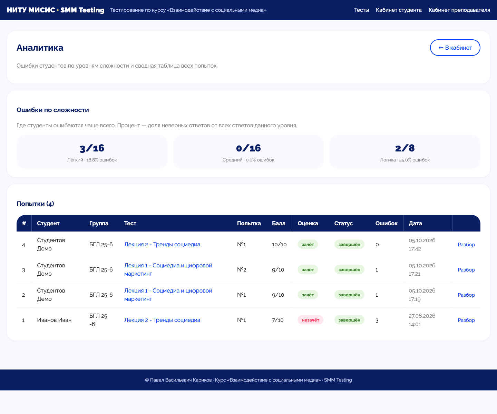
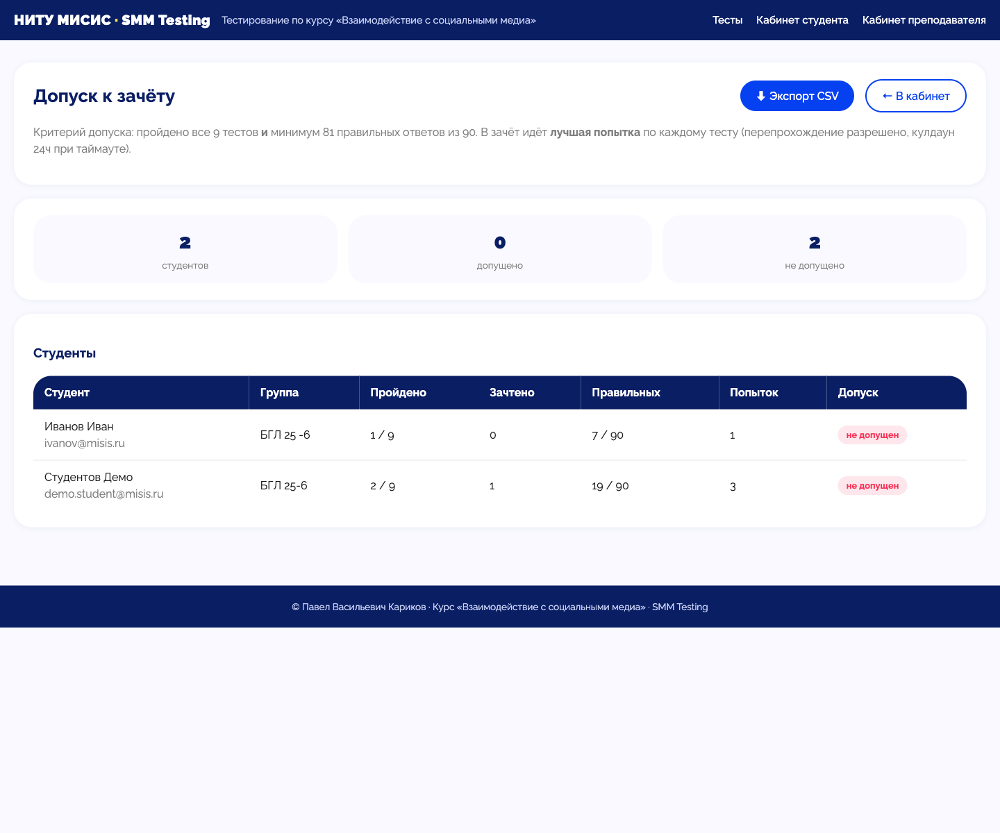

Демо для преподавателей кафедры · НИТУ МИСИС
SMM Testing
Онлайн-тестирование студентов по вашим лекциям —
с автогенерацией вопросов из PDF, аналитикой ошибок
и автоматическим допуском к зачёту.
Ищу пилотный курс на осень 2026/27
Павел Васильевич Кариков · преподаватель курса «Взаимодействие с социальными медиа» · karikov.pv@misis.ru
01 · Что даёт сервис преподавателю
Проверка знаний отнимает часы. Сервис возвращает их вам
Обычный цикл на поток из нескольких групп: опрос, проверочные, Excel-таблицы, ручной подсчёт допуска.
- Часы ручной проверки после каждой лекции
- Сомнения: списал студент или знает материал?
- Допуск к зачёту вручную по сводным таблицам
- Не видно, на каких вопросах провалился весь поток
- Составление тестов — отдельная рутинная работа
Что получает преподаватель
- Тест по каждой лекции — вопрос создаётся из вашего же PDF за минуты
- Проверка и зачёт/незачёт автоматически, по одним правилам для всех
- Полная картина: кто, когда, сколько попыток, допуск к зачёту
- Аналитика ошибок по сложности — видно, где лекция «не зашла»
- Выгрузка допуска в CSV одной кнопкой
02 · Сервис целиком
Два кабинета: студент и преподаватель
🎓 Кабинет студента
- Вход по корпоративной почте
@misis.ru
- Прогресс по 9 тестам и истории попыток
- Прохождение по одному вопросу с таймером
- Автоматический разбор каждой попытки
📋 Кабинет преподавателя
- Создание тестов: вручную, из JSON, из вашего PDF
- Расписание опубликования тестов
- Аналитика ошибок и разбор любой попытки
- Журнал допуска с экспортом в CSV
Браузеркабинеты студента и преподавателя
SMTPписьма с результатом на @misis.ru
→
FastAPIтесты · попытки · допуска
SQLiteвсе результаты локально
→
AI-модельавтогенерация 10 вопросов из PDF лекции
Расписаниеопубликование / закрытие теста
03 · Демо · кабинет студента
Прогресс по всему курсу — на одном экране
Студент видит все 9 тестов курса, результат каждой попытки и порог зачёта — в одном кабинете.

- Вход по почте @misis.ru — устанавливать ничего не нужно
- Статус каждой попытки виден сразу: зачёт / незачёт
- Перепрохождение — с кулдауном 24 ч: честные правила для всех
- Порог зачёта 7/10 — один и тот же для всей группы
04 · Демо · прохождение теста
По одному вопросу, таймер 3 минуты — как на семинаре
Таймер задаёт темп: 180 секунд на тест, последние 30 — красный счётчик.

- Один вопрос на экране — «пролистать всё» не получится
- Таймер 180 секунд, финальные 30 подсвечены красным
- Назад вернуться нельзя — ответ фиксируется навсегда
- Таймаут = кулдаун 24 ч. Время вышло — приходит через сутки
05 · Демо · результат попытки
Результат сразу — с разбором каждого вопроса
Балл и зачёт появляются моментально — сразу после последнего ответа.

- Зачёт при 7/10 — правило одно для всех
- В зачёт идёт лучшая попытка студента
- Разбор: ваш ответ и правильный — по каждому вопросу
- Уровень сложности каждого вопроса — на виду
06 · Демо · кабинет преподавателя
Тест создаётся тремя способами — от формы до вашего PDF
Один экран: статистика, три способа создания тестов, журнал попыток.

- Создание теста: вручную / из JSON / из PDF лекции
- Публикация в один клик — тест открывается группе
- Статус каждого теста: черновик / расписание / открыт
- Все попытки видны сразу после сдачи
07 · Демо · аналитика
Аналитика ошибок — видно, где лекция «не зашла»
Ниже — реальные данные демо-потока по трём уровням сложности.

- Лёгкий — 18.8% ошибок (3/16)
- Средний — 0.0% ошибок (0/16)
- Логика — 25.0% ошибок (2/8)
- Вывод: проблема не в запоминании фактов, а в понимании принципов
08 · Демо · допуск к зачёту
Допуск к зачёту — по формуле, без Excel
Кнопка «⬇ Экспорт CSV» выгружает готовую сводную ведомость.

- Критерий: все 9 тестов + 81 правильный из 90
- В зачёт идёт лучшая попытка по каждому тесту
- Статус каждого студента обновляется сам
- Не допущен — тоже видно сразу, с точной причиной
09 · Требование кафедры · без VPN
AI-генерация работает в РФ: GigaChat, YandexGPT, Qwen и DeepSeek
Все вопросы можно генерировать без VPN — на отечественных и китайских моделях, доступных в РФ. API OpenAI-совместимый: меняется только ключ и адрес.
| Модель | Где доступна (без VPN) | Цена, ₽ / 1000 токенов | Комментарий |
|---|
| GigaChat Lite / Pro | Сбер, API напрямую | 0,065 / 0,50 | Дешевле всего; есть эмодзи-выборка и «ai-check» для проверки текста |
| YandexGPT Lite | Yandex AI Studio | 0,20 | Отечественный вариант «на всякий случай» |
| Qwen3-235B | через Яндекс AI Studio | 0,50 | «Китайская нейронка» из списка кафедры |
| DeepSeek V3.2 / V4 Flash | через Яндекс / proxyapi | 0,30–0,80 | Сильная модель на русском, без VPN |
| Режим MOCK | — | бесплатно | Шаблонные вопросы — тест системы без нейронки |
~1 ₽
один тест (10 вопросов) на GigaChat Lite
~10 ₽
весь семестр из 9 тестов
0
VPN-подключений у вас и у студентов
10 · Продвинутый вариант · proxyapi.ru
Передовые американские модели — без VPN и в рублях
Российский прокси-сервис к API OpenAI, Anthropic, Gemini и DeepSeek. Работает из РФ без VPN — запросы идёт через цепочку прокси-серверов в Европе.
- OpenAI-совместимый API: меняю только base URL и ключ, код остаётся
- Оплата в рублях: счёт юрлицу, договор, ЭДО
- GPT-4o-mini — та самая модель, на которой тест уже сделан
- Регистрация и выдача ключей — в личном кабинете console.proxyapi.ru
- Резерв для случая, когда отечественных моделей станет мало
Переключение провайдера
# было (OpenAI через proxyapi)
BASE_URL = "https://api.proxyapi.ru/openai/v1"
API_KEY = "sk-..."
# стало (GigaChat)
BASE_URL = "https://gigachat.ru/api/v1"
API_KEY = "ключ из Сбер"
Весь код генератора не меняется — 2 строки настроек.
11 · Требование кафедры · честно о деньгах
Сервис не бесплатный: платно и API и сопровождение
Всегда платно: API-ключ
- Нейронка для генерации вопросов — платная услуга, у Сбера минимум 600 ₽/мес, у Яндекса — оплата по факту использования
- API-ключ — ваш, на ваше финансирование или грант кафедры
- Однако экономия крошечная: на тест из 10 вопросов — примерно 1–3 ₽ (пакет юрлица хватит на годы)
- Если не генерировать новых вопросов, ключ можно вообще не пополнять
Платное сопровождение*
- Запуск и поддержка на вашем домене, обновления, обучение — это моя работа, и она требует времени
- Абонентская плата обсуждается индивидуально (не сейчас, не бесплатно)
- Сам сервис — мой проект: без корпоративных лицензий и навязанных подписок
*Сопровождение платное — кроме одного случая: см. «Пилотная программа» на следующем слайде.
12 · Пилотная программа · осень 2026/27
Пилотному преподавателю сопровождение бесплатно
Я ищу один курс на осенний семестр 2026/27, где сервис запустится «в бою». Пилот — бесплатный для вас, кроме API-ключа нейронки.
✓
Бесплатно для пилотного преподавателя
- Настройка и запуск сервиса на вашем курсе (без VPN, на вашей модели из таблицы выше)
- Первая генерация тестов по вашим PDF-лекциям
- Обучение работы в кабинете преподавателя (30 минут)
- Поддержка в течение семестра, выгрузки и отчёты по каждому модулю
- Результаты пилота — в совместный научный-методический доклад (если интересно кафедре)
₽
Единственное, что оплачивает преподаватель
- API-ключ нейронки — от ~10 ₽ за семестр на GigaChat Lite или от 50 ₽ на Яндекс-моделях
- Платное сопровождение после успешного пилота — обсуждаем вместе после семестра
13 · Если пилот удастся · roadmap
Куда двигается сервис — по реальным запросам кафедры
1
Вход через корпусную почту МИСИС
Настоящая корпоративная почта вместо ручной регистрации: логины студентам приходят сами.
2
Подключение к Moodle
Тесты и результаты — прямо внутри системы Moodle, к которой кафедра уже привыкла.
3
Защита от списывания
Перемешивание вопросов и вариантов, блокировка копирования, контроль передачи попытки сокурсникам.
4
Анти-AI на прохождении
Серверные признаки использования нейронки при ответах: аномально быстрый ввод, поведение сессии, анализ текста.
Пилот — это и есть вход в этот roadmap: каждый пункт добавляется по запросу реального курса, на реальных данных, а не по воображению.
14 · Вопрос кафедры · как это соотносится с Moodle
Не вместо Moodle — вместе с Moodle
| Задача | Moodle | SMM Testing |
|---|
| Поддержка и надёжность | Сервер, SSO, бэкапы — силами университета | Личный проект: запуск на Render и далее на VPS кафедры |
| Оценки → ведомость | Автоматически, в журнал и банк оценок | Выгрузка CSV; автопубликация в Moodle — в roadmap |
| Создание тестов | Банк вопросов наполняется вручную — часы на один тест | Ваши PDF-лекции → готовый тест за минуты, вы только ревьюите |
| Обмен ответами в чатах | Рандомизация фиксированного пула — скриншоты сокурсников остаются рабочими | Персональный набор вопросов в каждой попытке — roadmap (следующий слайд) |
| Изменения под запрос курса | Заявка в IT-отдел вуза — недели и месяцы | Правка за часы, под конкретный курс |
Пилотная модель: тестирование идёт в SMM Testing, оценки и ведомость — в Moodle (автопубликация или CSV-импорт). Кафедра остаётся в своей системе, но получает тесты, которые вручную наполнять невозможно.
* Moodle — западная разработка (разработчик — Moodle Pty Ltd, Австралия). Прецедент уже есть: MS Teams прекратил работу в РФ в 2025 году. Гарантий, что лицензия Moodle не будет отозвана аналогичным образом, нет — а собственный сервис этот риск исключает: код и данные студентов остаются на вашей инфраструктуре на территории РФ.
15 · Вопрос кафедры · свой тест для каждого студента
Да: у каждого студента свой набор вопросов по каждой лекции
Генератор уже создаёт вопросы из вашего PDF. Сегодня он делает один набор из 10 — расширение до персональных наборов меняет режим работы генератора, а не архитектуру сервиса.
1
Генерация банка
AI создаёт банк 50–100 вопросов по вашей лекции за минуты. Формулировки — разные, источник — один и тот же PDF.
2
Ревью преподавателем
Вы просматриваете банк: «ок» / «переделать», помечаете сложность. Полчаса на лекцию — один раз за весь курс.
3
Сборка на попытку
При старте каждой попытки — случайные 10 из банка. У каждого студента свой тест, и каждая попытка — новый.
Почему не генерировать «на лету»?
Персональная генерация прямо при входе студента дала бы 15–40 секунд ожидания на первой странице теста и наборы, которые физически невозможно отревьюить. Банк с ревью сохраняет скорость и справедливость: порог зачёта 7/10 остаётся честным для всех.
Что это меняет
- Обмен ответами и скриншотами в чатах перестаёт работать
- Стоимость — те же ~1–3 ₽ за лекцию: банк обслуживает курс годами
- Добавляется в roadmap: кнопка «догенерировать банк» в кабинете преподавателя
Предложение для одной команды курса
Хочу быть пилотным курсом осени 2026/27
Если после демо вам интересно запускать сервис на своём курсе — напишите мне.
Своё время, настройка, обучение и поддержка: бесплатно для пилота.
Единственная оплата — API-ключ нейронки, порядка десятка рублей за семестр.
pavelkoff@gmail.com
https://www.marketing-ai-pk.ru/
Павел Васильевич Кариков · преподаватель курса «Взаимодействие с социальными медиа» · НИТУ МИСИС